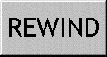

ENDING 3/3
After I answered the last question, I suddenly found myself engulfed in darkness.
Then, countless scenes flashed before my eyes, each one depicting a moment in somebody's life,
appearing and vanishing in an instant like a montage.
I watched as these scenes intertwined, gradually forming a vast and dense network.
Is this... the real spiritual network?
After the data leak, I coincidentially entered Dave's spiritual world.
Now, I am no longer in his world, nor have I returned to reality.
as if I am left behind in the gaps of the network.
The system has left me here to witness all this, but now I have nowhere to go.
What should I do now?
Will there be a place for me here?
Labyrinth Echoes
Produced by Monica Feng
Background pixel art by Saif Adnan, Pixel Jeff, Chatgpt, @Blear25(tumblr),
@minimoss(tumblr), @7her4ja(tumblr)
Thank you for playing!
